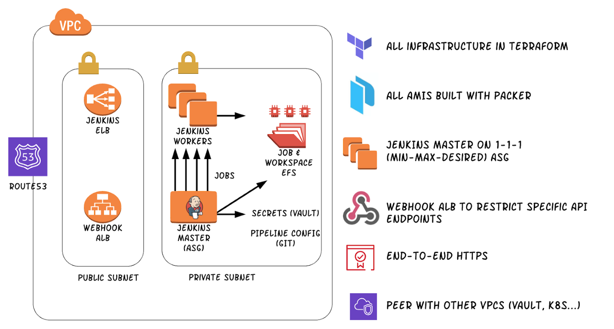

AWS 上的云原生 Jenkins
我们使用 Jenkins 搭建持续交付流水线，和其他很多团队一样，这些年我们围绕 Jenkins 创建了很多工作流程和自动化。Jenkins 是我们团队取得成功的关键，让我们能够在上一季度顺利进入生产677次，搭建及部署时长平均为12分钟。
我们的大部分应用和基础设施可以看作云原生，但当时 Jenkins 服务并不完全适合这个分类：服务在单个服务器上运行，同时很多任务直接在 master 上运行，其部分手动配置包括 secret、插件、定时任务和 startup hacking 的普通膨胀，该膨胀是自2014年首次搭建起不断累积而成。
Jenkins 不仅变成了单体服务和单点故障，而且拆除及重建 Jenkins 对企业也是很大的风险。
我们决定必须做出改变。这篇博客说明了我们如何运用 Terraform、Packer、Docker、Vault、和 ELB、ASG、ALB 或 EFS 等 AWS 服务实现 Jenkins Cloud-native，以及我们一路走来的收获。
Jenkins 状态
当时不得不面对的关键问题是：如果我们将 Jenkins 服务置于一个容器/自动缩放实例中，我们需要恢复何种状态？
问题的答案并不简单，值得一提的是，有个 Jenkins 特别兴趣小组（SIG）已经识别出所有导致这一 Jenkins 状态的存储组件。这是一个很棒的起点，因为我们至少得确保那篇文章列出的所有存储类型都考虑在内。
捷径
这不是新问题。很多团队使用 Docker 容器运行 Jenkins，官方 Jenkins Docker 镜像也得到良好维护。如《Jenkins Dokcer 镜像》文档中解释的：
docker run -p 8080:8080 -p 50000:50000 -v jenkins_home:/var/jenkins_home jenkins/jenkins:lts
这会把 workspace 存在 /var/jenkins_home。所有的 Jenkins 数据（包括插件和配置）都存在上述目录里。创建一个明确的 volume 可以方便管理和附加到另一个容器进行升级。
上述示例装载主机上的 jenkins_home，其中包括所有 Jenkins 状态。然后该目录可以存在一个外部磁盘上，比如 Kubernetes 持久化存储卷。或者，如果 Jenkins 在 EC2 上运行，该目录可存在一个外部 EBS 或 EFS 卷上。
这是一种有效的方法，但我们认为这个方法不能达到我们的标准，因为 jenkins_home 不仅包括状态，还包括配置。Block storage 拥有大量用户案例，但一个小小的配置修改就必须进行 snapshot 恢复操作，这似乎并不算是好的解决方案。此外，我们并不是想转移问题：外部存储无法免去手动配置、凭据储存在文件系统等问题。
SCM 救援
过去，我们用了 Jenkins 备份插件，该插件基本上把配置修改备份在源码控制里，允许配置恢复。这个插件的设计想法很棒，但我们决定不使用它，因为我们无法轻松控制哪些数据实现备份，而且该插件自2011年就没有任何更新了。
这样的话，如果我们把 jenkins_home 创建成个人 Git repo，并自动提交对 Jenkins 所做的修改呢？此处的关键是排除单独储存的任何二进制文件、secrets 或大型文件（稍后详细介绍）。我们的 .gitignore 文件如下所示：
/.bash_history
/.java/
/.kube/
/.ssh/
/.viminfo
/identity.key.enc
/jobs/
/logs/
/caches/
# Track static worker and exclude ephemeral ones
/nodes/**
!nodes/static-node/config.xml
/org.jenkinsci.plugins.github_branch_source.GitHubSCMProbe.cache/
/plugins/
/saml-idp-metadata.xml
/saml-jenkins-keystore.jks
/saml-jenkins-keystore.xml
/saml-sp-metadata.xml
/scm-sync-configuration/
/scm-sync-configuration.success.log
/secret.key
/secret.key.not-so-secret
/secrets/
/updates/
/workspaces/
几乎所有的纯文本配置都正在 Git 实现持久化。为了给 Jenkins 提供这一配置，我们要做的就是检查 startup 上的 repo；事情渐渐成形。
Secrets
Jenkins 要访问很多地方，也就是说我们需要一个安全的 secret 存储空间。因为我们是 HashiCorpVault 的重度用户，所以自然而然就选了这个工具，不过遗憾的是，Vault 无法涵盖所有场景。比如，scm-branch-source 流水线插件需要 SCM 的认证凭据，并默认为 Jenkins 凭据插件。每次从 Vault 动态检索这些，我们都需要同步一个仓库，这可能导致错误，也会需要额外的精力去维护。
这就是为什么我们采用 Vault 与 Jenkins 凭据混合的方法： 1. 在 startup 实例中，Jenkins 进行认证，VAult采用 IAM 认证方法。 2. 一个引导脚本检索 Jenkins master.key 和凭据插件所用的其他加密密钥。更多详情请参阅这篇文章。 3. 储存在 jenkins_home/credentials.xml 上的凭据现在可由 Jenkins 解密和访问。
用 Vault 完全取代凭据插件是我们未来可能探索的问题，不过我们很开心这个方法满足了安全性要求， 同时能轻松与 Jenkins 的其余功能实现集成。
任务和 workspace 数据
问题从这一步开始变得棘手：jenkins_home/jobs and jenkins_home/workspaces 都含有介于非结构化数据、创建制品和纯文本之间的混合体。这个信息很有价值，可以帮助我们审计、理解之前的流水线 build。这些 build 尺寸很大，而且不太适合 SCM 同步，因此这两个目录都排除在 .gitignore 之外了。
那我们把这些储存在哪儿呢？我们认为 block storage 最适合存储这种数据。作为 AWS 的重度用户，使用 EFS 完全说得通，因为 EFS 的文件存储可扩展、可用性高并可以通过网络访问，非常易于使用。我们使用 Terraform 整合了 AWS EFS资源，并用 AWS 备份服务制定了一份定期备份计划。
在 startup，我们将 EFS 卷 、符号链接 jenkins_home/jobs 和 jenkins_home/workspaces 装载到 EFS 目录上，然后启动 Jenkins 服务。
接下来，Jenkins 服务是唯一可以读写任务 /workspace 数据的界面。值得一提的是，我们有一个 Jenkins 任务定期删除几周前的任务和 workspace 数据，这样数据不会一直增加。
Packer 和 Terraform 实现编码化 Jenkins
你可能想知道这些是如何凑在一起的？我甚至没说过在哪里运行 Jenkins！我们广泛使用 Kubernetes，花了一些时间思考将 Jenkins 作为容器来运行，可我们决定使用 Packer 和 EC2 来运行 Jenkins master，用短暂 EC2 实例运行这些任务。
尽管将 master 和 worker 双双作为容器运行的想法很有用，但我们在当前 Kubernetes 集群里没有找到存储 Jenkins 的地方。而且只是为了 Jenkins 就新建一个集群似乎有点儿“杀鸡用牛刀”。此外，我们想保留从其余服务中解耦的基础设施的关键部分。这样的话，如果 Kubernetes 升级对我们的 app 有影响，我们希望至少可以运用 Jenkins 进行回滚。 运行“Docker in Docker”还有另一个问题，这个问题有解，不过还是需要说明一下，因为我们的 build 经常用到 Docker 命令。
其体系架构如下： 
能使用 EC2 实例让过渡更顺畅：我们当时通过 Jenkins EC2 插件用临时 worker node 运行流水线工作，并在声明式流水线代码上调用了这一逻辑，所以不必重构就能用 Dokcer 代理节点是一个加分项。其余工作就是 Packer 和 Terraform 代码，这是我们已经很熟悉的部分了。
插件
因为插件也是状态！我们在这个项目里想要解决的问题之一就是更好地审计、管理插件。在手动场景中，插件管理可能不受控制，很难了解安装插件的时间和原因。
大多数 Jenkins 级别的插件配置可以在常规 Jenkins 配置 xml 文档中找到，但安装插件也导致 jar 制品、元数据、图片和其他文件存在 jenkins_home/plugin 目录。
一种方法是在 EFS 中存储插件，不过我们想将 EFS 使用率保持在最低水平，这无法解决问题，只是转移问题。这就是为什么我们选择对插件安装进行“Packer 化”。
基本上，在我们的 AMI 定义中，有一个插件文件罗列了插件和版本，大致如下：
# Datadog Plugin required to send build metrics to Datadog
datadog:0.7.1# Slack Plugin required to send build notifications to Slack
slack:2.27
然后，我们的 AMI provision 脚本解析该文件，用 Jenkins CLI 安装插件和所选版本：
# Wrapper function for jenkins_cli
jenkins_cli() {
java -jar "$JENKINS_CLI_JAR" -http -auth "${user}:${pw}" "$@"
}for plugin in "${plugins[@]}"; do
echo "Installing $plugin"
jenkins_cli install-plugin "$plugin" -deploy
done
然后，任何需要安装的新插件或升级到当前安装版本的版本升级都需要 GitHub Pull Request，这会触发搭建新 AMI。完美！
安装其他软件
根据定义，Jenkins 要安装很多软件才能创建、测试和部署。首先，我们不想让 master node 运行任何任务，所以我们避免安装任何与任务相关的软件。Master 的主要任务是在其他短暂 worker node 上提供界面、编排 builds。
这意味着我们可以在 worker node 上安装所需工具，但我们决定尽可能多地使用 docker run。这是因为我们是使用 Scala、Java、Node、Golang、Python等其他编程语言的多语言组织。为所有这些软件栈维护不同 build 工具可能让 worker node 设置变得有点儿复杂。
以 JavaScript 为例，我们想让 Jenkins 针对 install 和 test 等 app 运行 yarn 命令。简单将加载检查过的 repo 目录作为一个 volume 安装到 Docker 容器里，从该容器中运行任何命令。以下为运用 Groovy 工作流代码的例子：
def node(command, image) {
def nodeCmd = [
'docker run -i --rm',
'-u 1000', // Run as non-root user
'-v ~/.npmrc:/home/node/.npmrc:ro',
'-v ~/.yarn:/home/node/.yarn',
'-e YARN_CACHE_FOLDER=/home/node/.yarn/cache',
"-v ${env.WORKSPACE}:/app",
'--workdir /app',
"${image}"
].join(' ')
sh "${nodeCmd} ${command}"
}
然后，我们检查仓库后可以调用这个功能：
checkout scm
node('yarn install --frozen-lockfile', 'node:12.6.0-alpine')
漂亮收尾！因为除了 Docker 后台程序或 kubectl，我们不必在 worker machine 上安装、维护所用工具的多个版本。我们也相信 build 命令在本地和 CI 环境之间是一致的，因为用的是同一个 Docker 镜像。
运用临时 node 创建时要记得缓存依赖。比如，一个 worker node 重建后，我们丢失了 sbt 缓存，由于缓存必须重建，这导致创建时间变慢。如果外部依赖不可用，这甚至会导致失败。我们决定将相关依赖缓存在另一个外部 EFS 上，以求获得更快、更可靠的 build。
结语
Jenkins 是一个很棒的工具，但在管理外部状态上略有不足，因此以 cloud native 的方式创建 Jenkins 较有难度。我们的方法并不完美，但我们相信这个方法结合了两者的精华，而且确保安全性、操作简单、有弹性。令人高兴的是，我们完成这个项目，并把所有的生产 build 迁移到新的 Jenkins 服务之后，可以终止 master server，让自动缩放在几分钟内完成重建，而不会影响以前储存的状态。